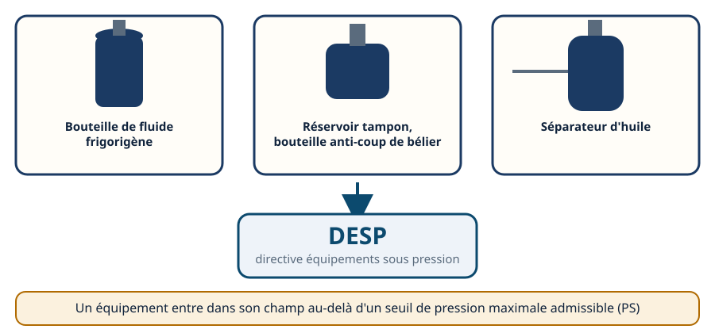
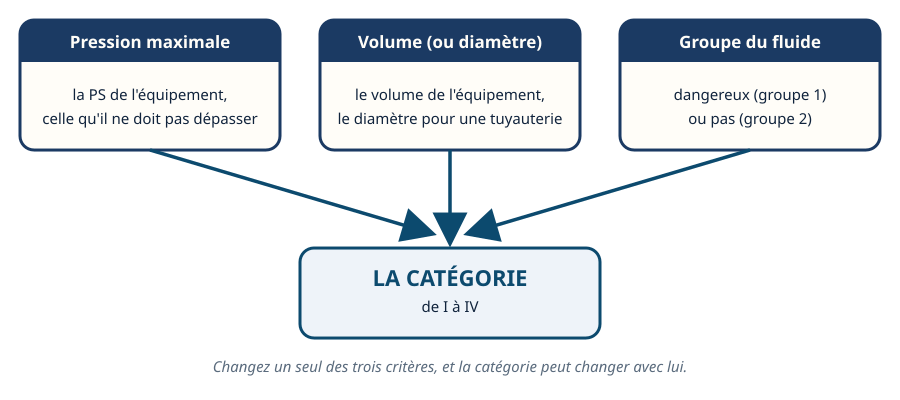
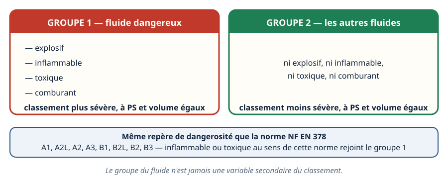
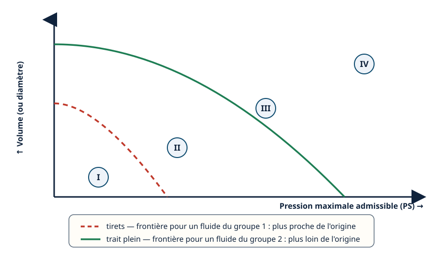
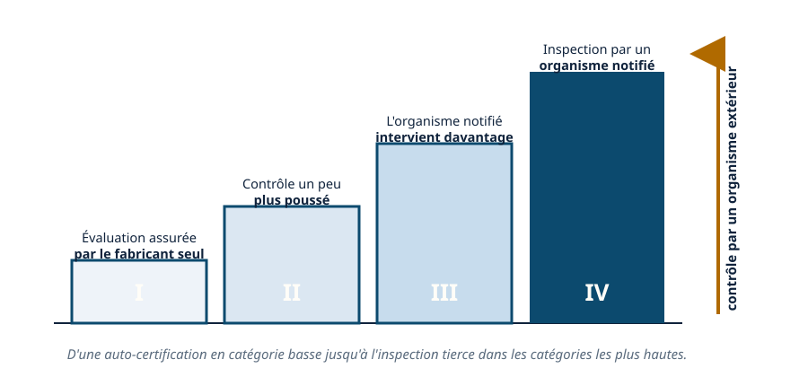
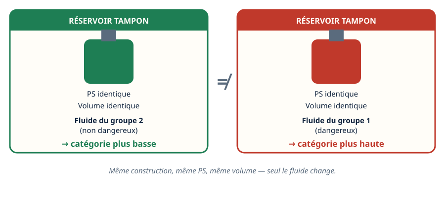
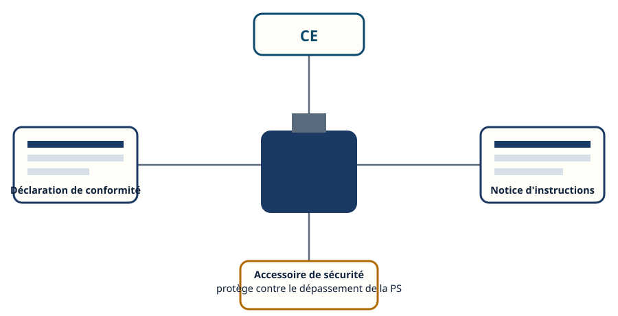
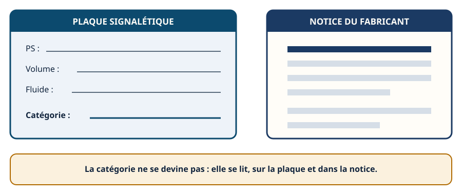

La DESP · niveau BTS
Catégories I à IV — la logique du classement
Mini-station commentée · 8 écrans et 4 questions · environ 10 minutes
À la fin de la station, vous savez situer un équipement sous pression — bouteille, réservoir, séparateur — dans la logique du classement DESP : pourquoi la pression, le volume et le fluide se croisent, pourquoi la catégorie borne le niveau de contrôle, et pourquoi deux équipements identiques peuvent relever de catégories différentes selon ce qu'ils contiennent.
Chaque écran peut être expliqué à voix haute : le bouton « Écouter » commente ce que vous voyez. Rien n'est dit qui ne soit aussi écrit.
Écran 1 sur 8
La DESP : quels équipements sont concernés
La directive européenne relative aux équipements sous pression (DESP) encadre la conception, la fabrication et le contrôle des équipements qui contiennent un fluide sous pression, dès que leur pression maximale admissible — la PS — dépasse un seuil fixé par le texte. En dessous, l'équipement n'entre pas dans son champ.
Pour un frigoriste, elle concerne des équipements croisés au quotidien : une bouteille de fluide frigorigène, un réservoir tampon, une bouteille anti-coup de bélier, un séparateur d'huile. Chacun contient un fluide sous pression, donc chacun peut relever de la DESP.

Écran 2 sur 8
Trois critères croisés, pas un seul
La catégorie d'un équipement ne dépend jamais d'un seul chiffre. Elle résulte du croisement de trois éléments : la pression maximale admissible (PS), le volume de l'équipement — ou le diamètre, pour une tuyauterie — et le groupe du fluide qu'il contient.
Plus la combinaison pression-volume est élevée, et plus le fluide est dangereux, plus la catégorie retenue est haute. Changez un seul des trois critères, et la catégorie peut changer avec lui.

Écran 3 sur 8
Le groupe du fluide : dangereux ou non
La DESP range chaque fluide dans l'un de deux groupes. Le groupe 1 rassemble les fluides dangereux : explosifs, inflammables, toxiques ou comburants. Le groupe 2 rassemble tous les autres.
Cette dangerosité est le même repère que celui utilisé par la norme NF EN 378 pour classer les fluides frigorigènes (A1, A2L, A2, A3, B1, B2L, B2, B3) : un fluide inflammable ou toxique au sens de cette norme relève du groupe 1 de la DESP. À PS et volume égaux, un équipement contenant un fluide du groupe 1 est classé plus sévèrement qu'un équipement contenant un fluide du groupe 2.

Écran 4 sur 8
Le diagramme croisé : la frontière qui bouge
Imaginez deux axes : la pression maximale admissible en abscisse, le volume — ou le diamètre — en ordonnée. Plus on avance sur les deux axes à la fois, plus on entre dans les catégories hautes.
Ce diagramme n'est pas fixe : le groupe du fluide déplace la frontière entre les catégories. Pour un fluide du groupe 1, la frontière se rapproche de l'origine — une combinaison pression-volume plus modeste suffit à atteindre une catégorie plus haute. Pour un fluide du groupe 2, il faut aller plus loin sur les deux axes pour changer de catégorie.

Écran 5 sur 8
Plus la catégorie monte, plus le contrôle est lourd
Les catégories DESP vont de I à IV. Ce n'est pas qu'un classement : c'est aussi une échelle de contrôle. En catégorie I, la plus basse, le fabricant peut assurer seul l'évaluation de conformité de son équipement.
Plus on monte vers la catégorie IV, plus l'intervention d'un organisme extérieur — un organisme notifié — devient nécessaire, jusqu'à l'inspection de l'équipement par un tiers pour les catégories les plus hautes. Un équipement plus dangereux ou plus sollicité est donc davantage surveillé, à toutes les étapes de sa vie.

Écran 6 sur 8
Un même réservoir, deux fluides, deux catégories
Prenez un réservoir tampon, ou une bouteille anti-coup de bélier, de forme et de volume identiques. Sa catégorie DESP n'est pas figée par sa seule construction : elle dépend aussi de ce qu'il contient.
Rempli d'un fluide du groupe 2, ce réservoir peut relever d'une catégorie donnée. Rempli d'un fluide du groupe 1 — parce qu'il est inflammable ou toxique —, le même réservoir, à pression et volume identiques, peut basculer dans une catégorie plus haute. Le fluide change la catégorie, pas seulement le contenant.

Écran 7 sur 8
Ce qui accompagne l'équipement
Un équipement sous pression conforme à la DESP porte le marquage CE et s'accompagne d'une déclaration de conformité établie par le fabricant. Une notice d'instructions doit aussi être fournie : elle précise les conditions d'utilisation, de montage et de maintenance.
Des accessoires de sécurité complètent l'équipement — une soupape, par exemple — pour protéger contre le dépassement de la PS. Ils font partie intégrante de l'équipement, au même titre que le réservoir ou la bouteille eux-mêmes.

Écran 8 sur 8
Le réflexe : lire la plaque et la notice
- La PS, le volume (ou le diamètre) et le groupe du fluide se croisent pour donner la catégorie.
- Groupe 1 = fluide dangereux (explosif, inflammable, toxique, comburant). Groupe 2 = les autres.
- Plus la catégorie monte, plus le contrôle par un organisme extérieur est lourd.
- Marquage CE, déclaration de conformité, notice et accessoires de sécurité accompagnent l'équipement.
- La catégorie ne se recalcule pas sur le terrain : elle se lit sur la plaque et dans la notice.
Le réflexe : vérifier la plaque de l'équipement et la documentation du fabricant.

Question 1 sur 4
Quels trois éléments se croisent pour donner la catégorie ?
Question 2 sur 4
Qu'est-ce qui distingue le groupe 1 du groupe 2 ?
Question 3 sur 4
Un réservoir tampon change de fluide, sans changer de PS ni de volume. Sa catégorie…
Question 4 sur 4
Plus la catégorie DESP est élevée, qu'est-ce que cela change ?
Les correspondances de la station
- NF EN 378 (même sous-ligne, en préparation) — c'est le groupe du fluide au sens de cette norme (A1, A2L, A2, A3, B1, B2L, B2, B3) qui alimente la notion de dangerosité utilisée par le classement DESP : la correspondance est directe.
Cette station est en préparation avec les autres du réseau : les liens ouvriront au fur et à mesure.